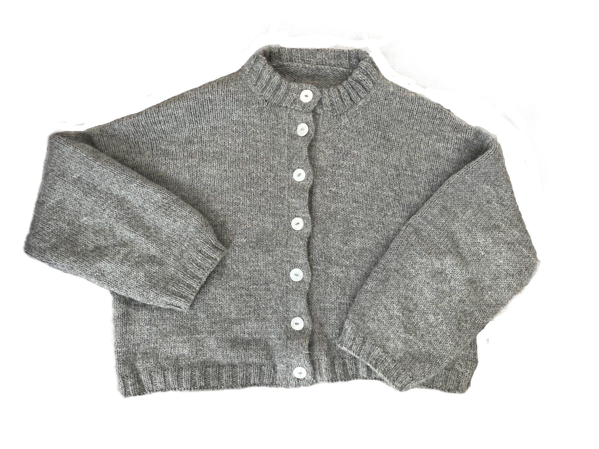
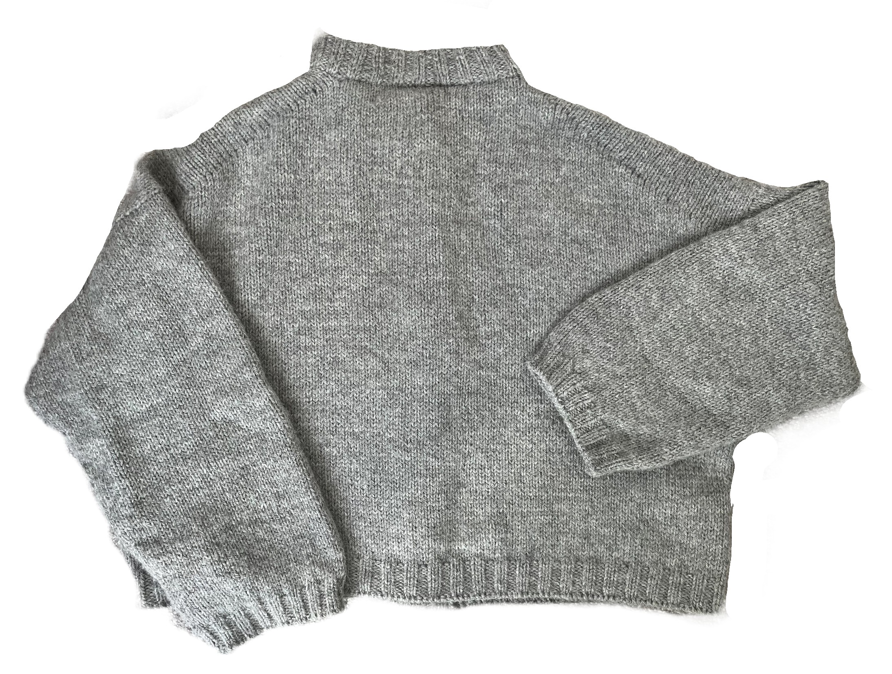
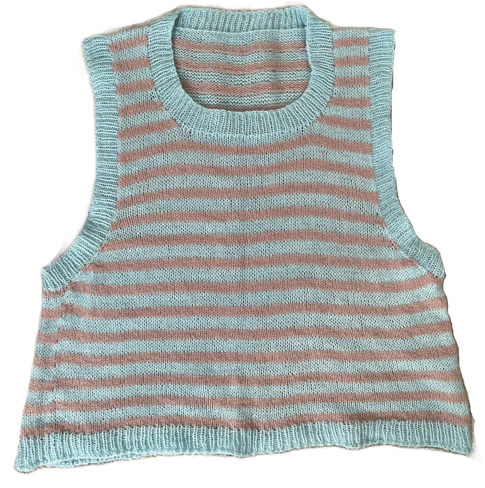
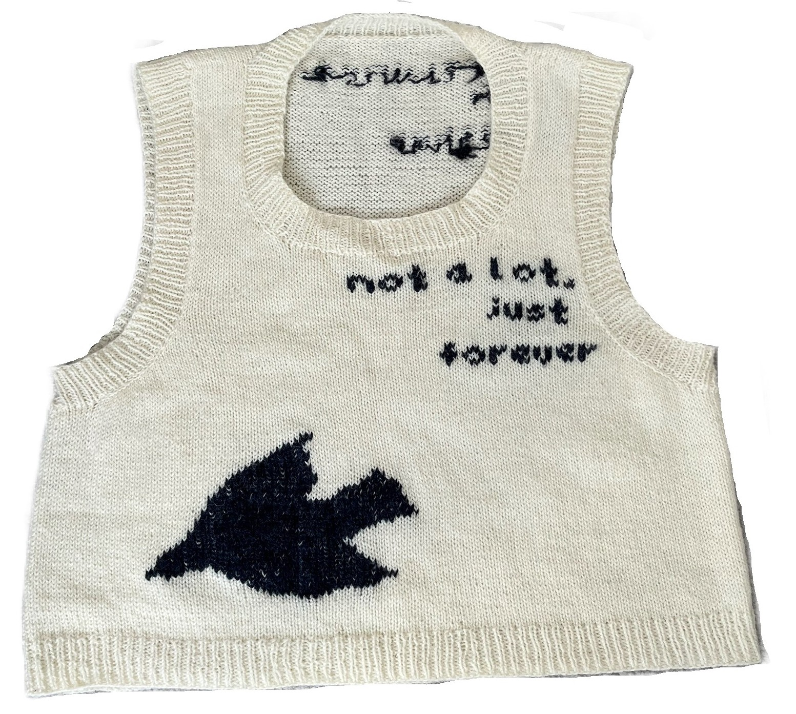
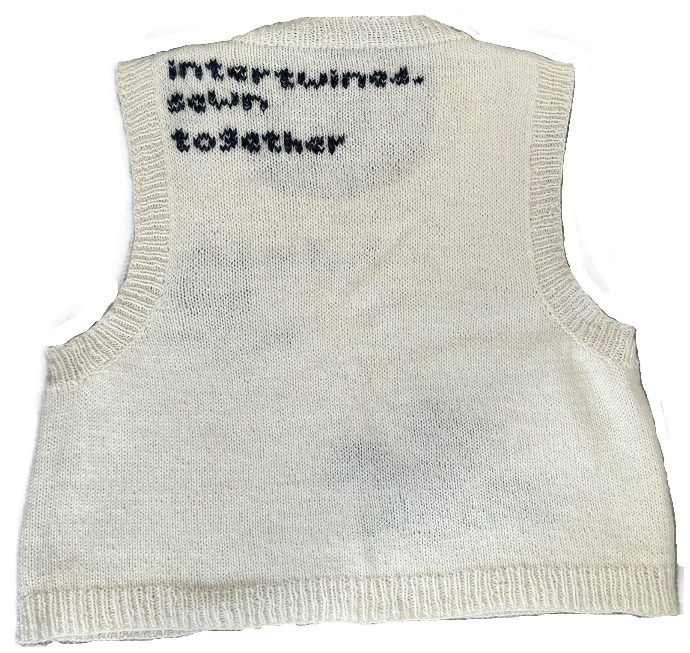

THE VERY HUNGRY CARDIGAN
@katiealicemakes
This was my first ever test knit, I was so nervous but it ended up being so fun!
It was my first time doing colourwork for a large piece, I definitely have a lot of gaps and pulling but blocking it helped.
I redid the apple motif a few times to try and improve it and went back over with duplicate stitching to neaten it up.
Yarn used:
Drops Flora: Lemonade (26), Misty Forest (23), amethyst (09)
BC Garn Bio Shetland: Wool White (01), Forest Green (8), Grass Green (10)
All other colours were scrap yarn I already had


THE HANNI CARDIGAN
@knittersandfriends
I bought this yarn to self-draft my own cardigan with and off centred close that used metal clasps.
After finishing it I never wore it and wasn't happy with how it looked, I saw the Hanni Cardigan on Pinterest in burgundy and thankfully had enough yarn for it.
The pattern calls for the yarn to be held double with mohair but I didn't want to spend even more money and liked how the yarn looked by itself, luckily it was still on gauge.
I'd still like to redo the first project that used this yarn but I need to take it slower and not rush into it.
I love how this turned out! Double knit button bands and collar make any project look so much better, thinking of making it again in the same burgundy colour I saw!
Yarn used:
DROPS Nepal: 0501 MIX Grey



THE SICILY SLIPOVER
@kisskissrhinestones
Such a good pattern that I've made it 3 times! I made the cream vest plain at first but realised anything I wore underneath showed through.
I used duplicate stitch to add the lyrics from 'Not a lot, just forever' by Adrianne Lenker and the bird motif. With the amount
of yarn used for the bird it has made it the fabric quite stiff and thick, but steaming it loosened it
I used the wrong kind of cast-off for the sleeves and neck of the striped vest so they are quite loose, I threaded through some elastic
instead of redoing it.
Yarn used:
Managed to get two cones of the light blue and pink yarn second hand
Baa Ram Ewe Pip Colourwork: Hessle (005)
Drops Flora: Off White (01)
GOODREADS RECOMMENDER SYSTEM
My Final Year Dissertation


ABOUT ME
Hi, I’m Madeleine! I did my bachelor's in Computer Science and now I'm a Postgraduate Researcher in the safety of AI.
My focus is on the lifelong safety of dynamic recommender systems using uncertainty to improve recommendations for long-tail items.
I believe safety in the Computer Science community deserves more time and should be seen not as a constraint but as an innovation in its own right.
I love knitting, reading, gardening, collecting CDs (my favourites on the left), and listening to radio 4.
This website is to document my projects — whether it's coding, research, knitting, or sewing.
I'm hoping this will be a good way to see my progress and keep myself accountable over the 4 years of my PhD.